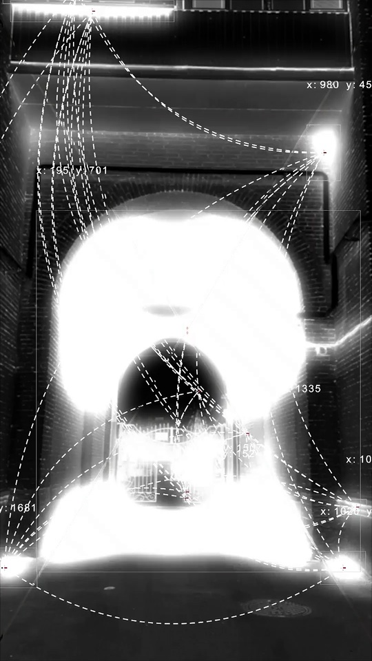
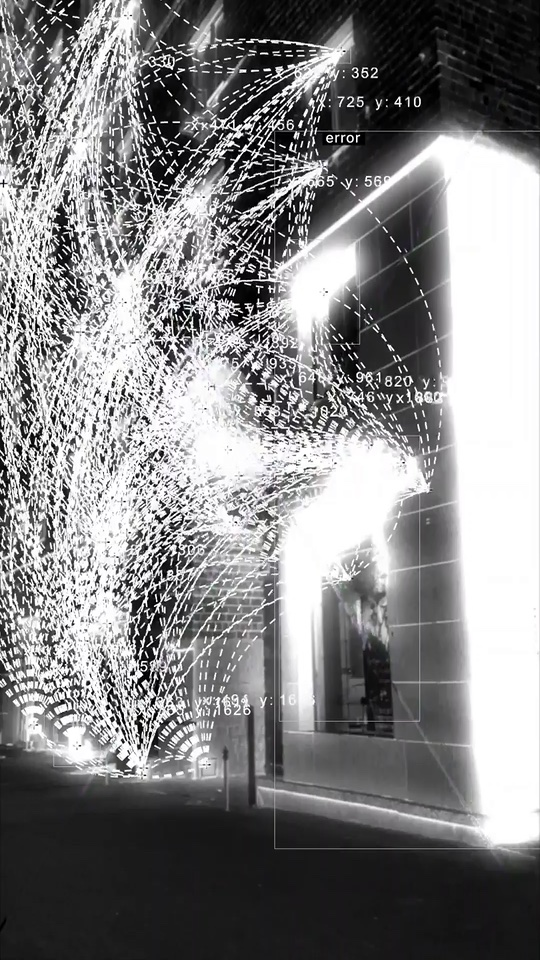
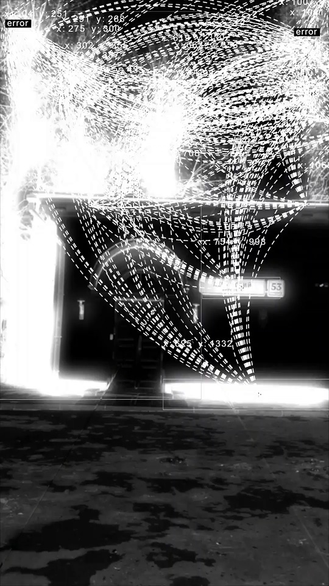

ARCHES AMONG US
This collaborative project explores arches in the Gagarinsky District and offers our interpretation of them.





Instead of showing arches only as architectural elements, I tried to see something more alive in them, with an inner character of their own. The main idea rests on the contrast between exterior and interior space. From the outside, an arch looks like a simple, familiar structure. People pass through it without thinking about it. It is simply part of their surroundings. But I wanted to imagine that something is hidden beyond that visible surface.



In my interpretation, each arch has an inner world of its own, shaped by the people who live nearby or walk through it every day.


